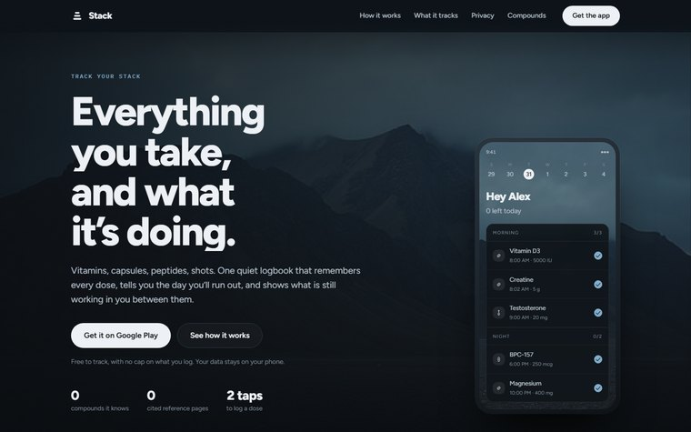
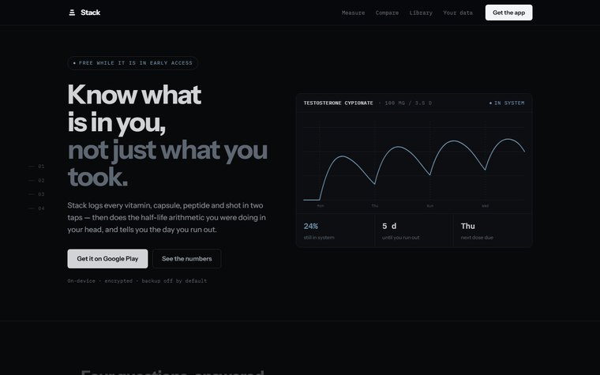
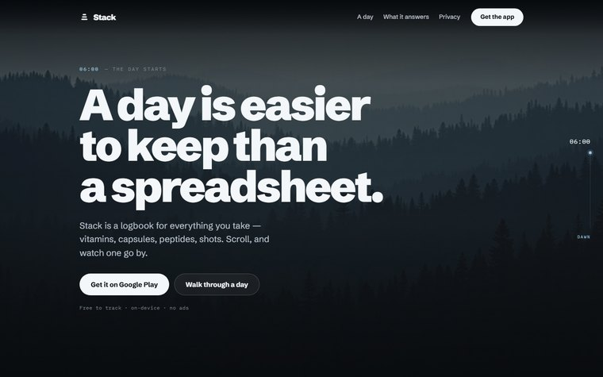
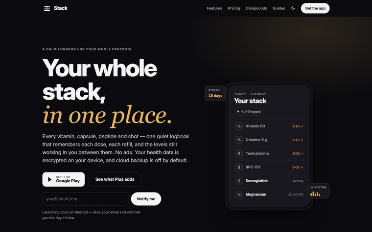

Stack · website rebrand
All three are full working pages — open them and scroll. Every photograph was generated locally on your own card, at 4K, from the same pipeline that makes the app's backgrounds, so there is no stock licence and no stock tell.

The site as the app's front door. A 4K photograph behind the hero, an opaque nav band tinted from its own sky, the app floating over it — the exact three-layer system the Overview uses.
Open it
Credibility through precision, not atmosphere. The hero is the app working — a real half-life curve drawing itself. Hairlines, tabular figures, a spec table. Photography only as breathing room.
Open it
The page is one day. Scrolling is time passing: the photograph cross-fades dawn to night, a clock advances, and the stack logs itself as you go. Motion is the concept, not the finish.
Open it
Same content, same claims. The difference is entirely in the treatment: no photography, a gold accent the app has already dropped, and a serif-italic flourish doing the work that type weight and scale should be doing.
mockups/; index.html and everything it loads is
untouched. The photographs live in mockups/assets/ and are
regenerated by python tools/gen_header.py —
--rank scores each one for whether it actually leaves room for
a headline, and reports the contrast every band that carries text would get.
gen_header.accent_from(), which is the same rule
the app uses one level down — the app derives its accent from
whichever background the user chooses. All five candidate photographs
returned nearly the same hue, which is what makes this cold blue a brand
colour rather than a preference.